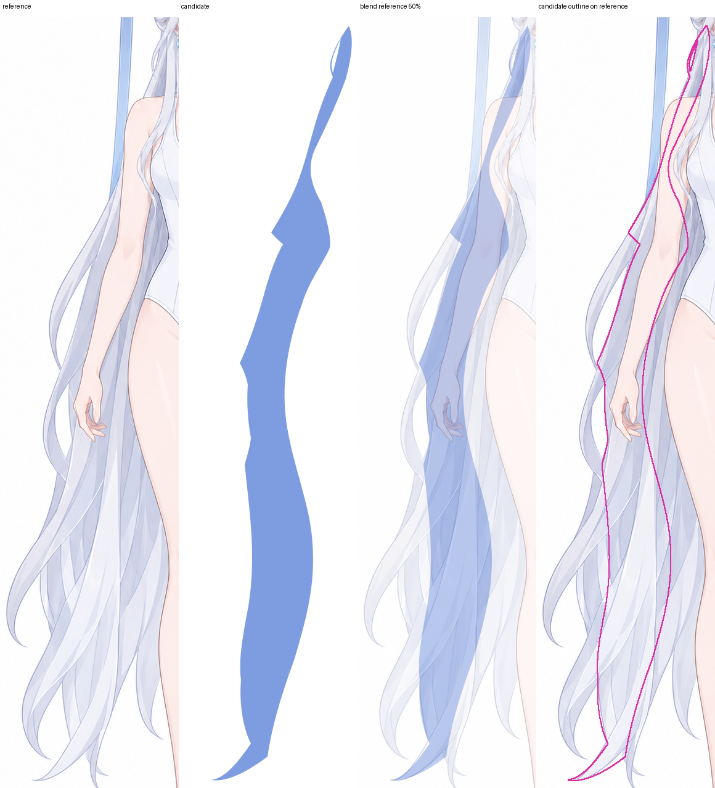
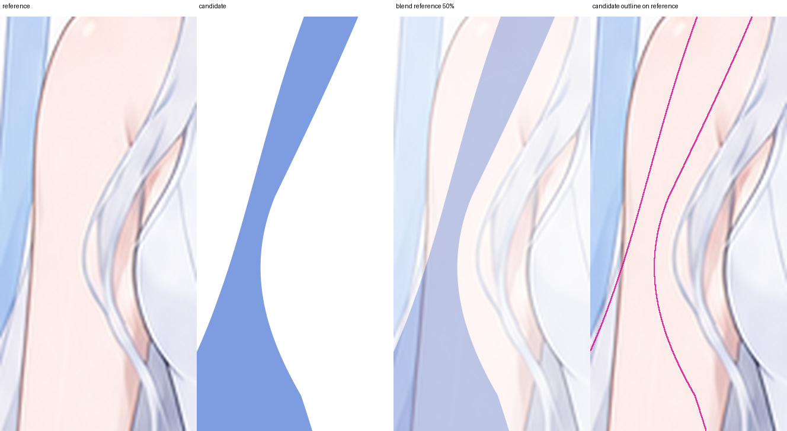
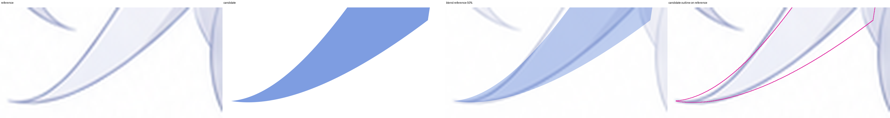

回环连接修复对照 · 8×
查看图中候选与前版对照：确认上、下回环的内部白楔已闭合，真正的透空孔仍开放。

第 30 组的 6 个子件已通过默认轮廓检查。独立审查实际查看了 16 张图，完成其中 5 个子件的单件记录；检查最后一束斜尖长发时遭遇图像处理策略拦截，因此整组尚未通过。
请查看下列原有对照图，确认斜尖长束、回环孔和连接处是否可以通过。点击图片可查看原尺寸。彩色块用于区分子件，正式发色和材质仍在后续步骤制作。
检查发束从耳后到斜尖连续，外轮廓和方向与参考对应。

检查隐藏根面有面积，肩后连接没有切断或夹成细缝。

检查尖端保持锐利、曲线平顺，局部修正没有造成台阶。

查看图中候选与前版对照：确认上、下回环的内部白楔已闭合，真正的透空孔仍开放。
结合下方无父层 SVG，检查所有发束接合、两处回环孔、双叉和各尖端。

此处去掉父级底形，可查看是否存在被底形掩盖的断口。单独打开 SVG
候选 SHA-256：4da747b49621ec49eec03cbdeeac09a0563c0c4527afc57e24a3b4442a781679
完整候选 SVG · 已完成的部分审查记录 · 返回作品页